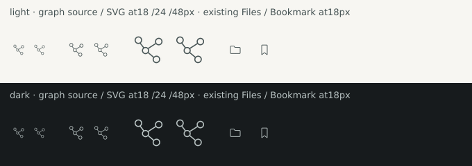
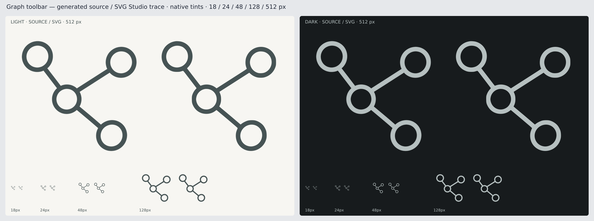

One generated Graph glyph, traced by SVG Studio. Source is left and SVG right in every pair. Native tints are compared on both themes at 18, 24, 48, 128 and 512 pixels.

Open the full-resolution comparison

The PNGs use existing application tints. Native window integration remains a separate check.